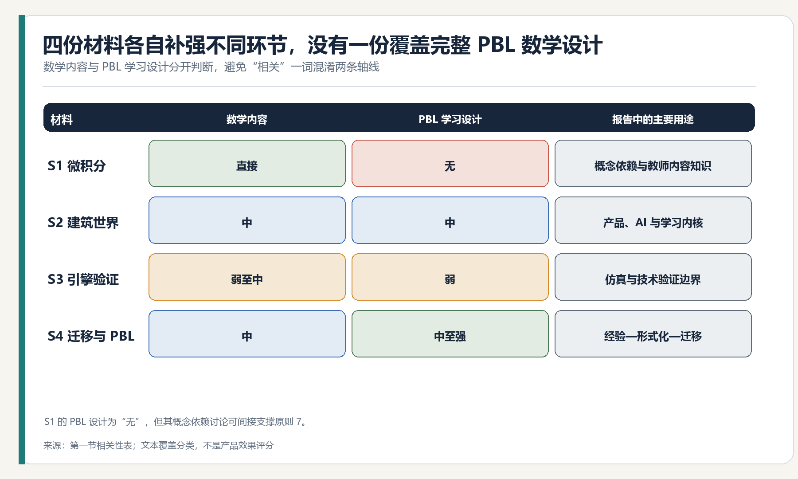
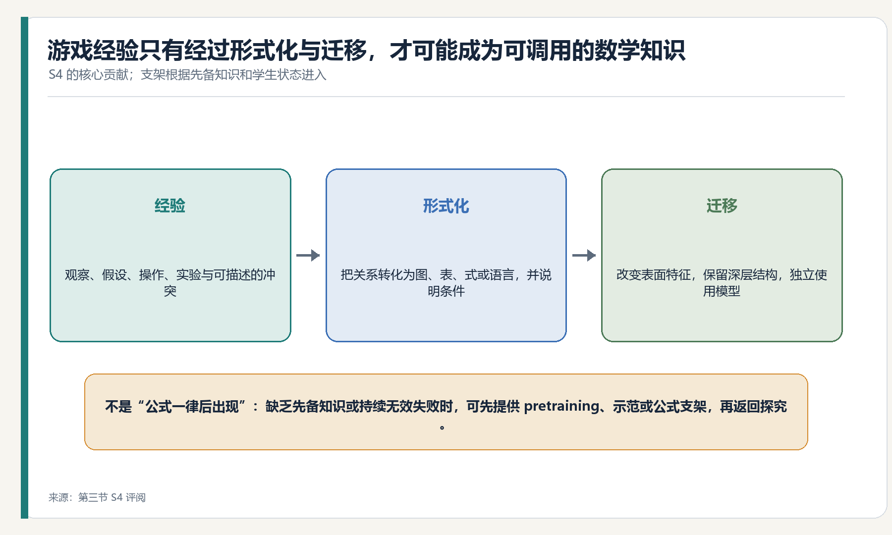
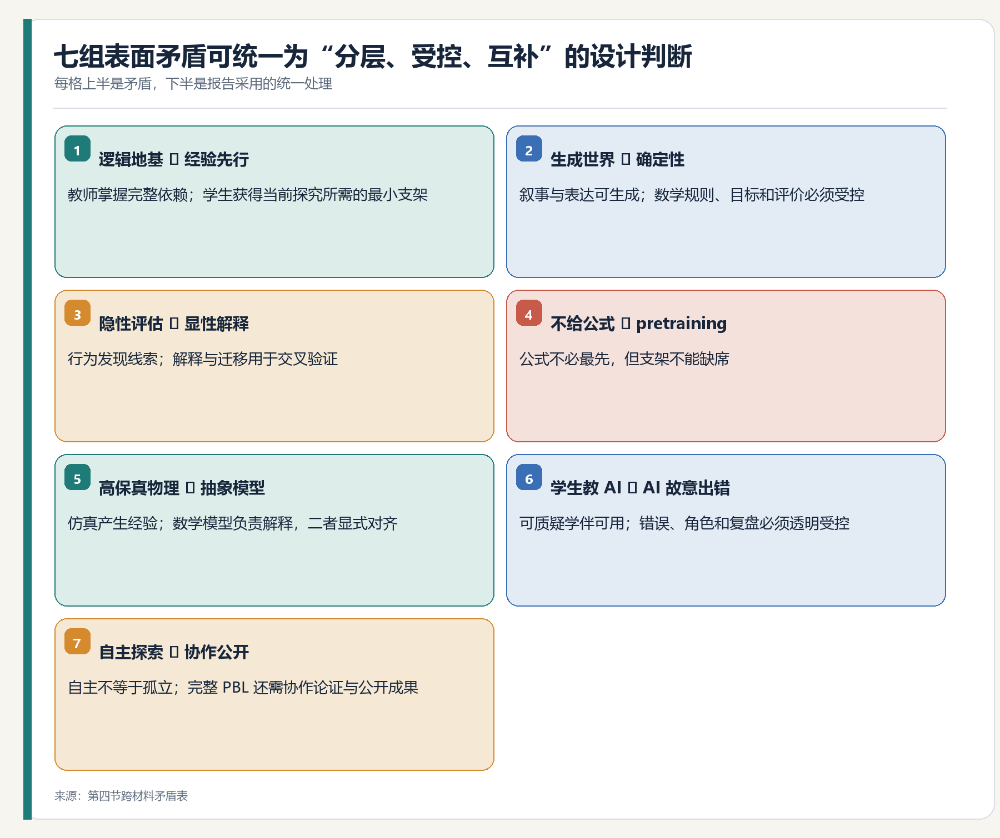
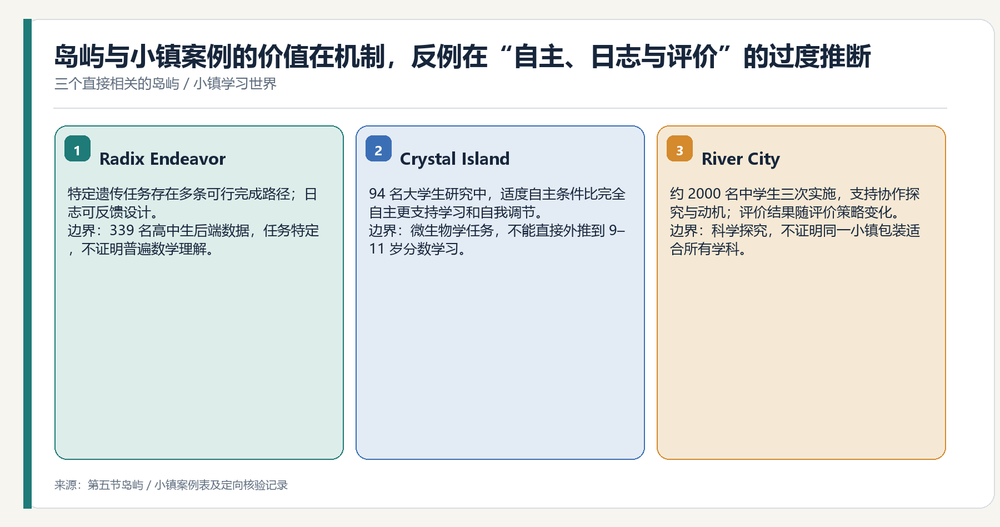
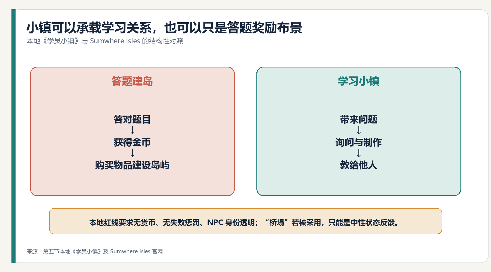
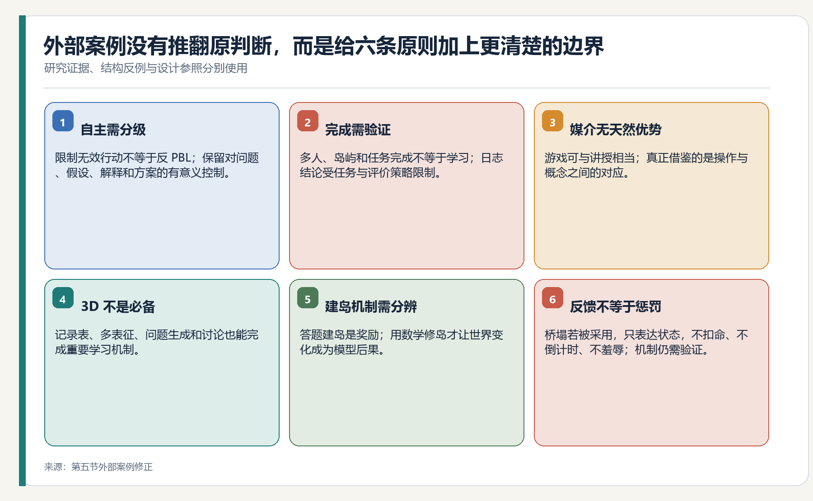
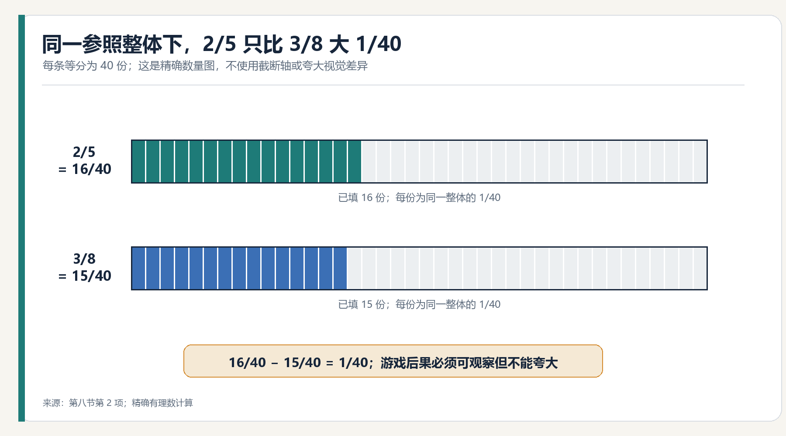
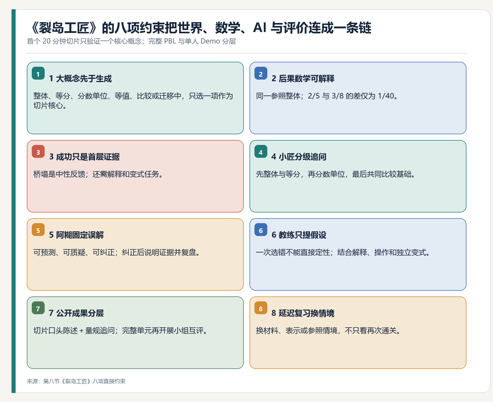
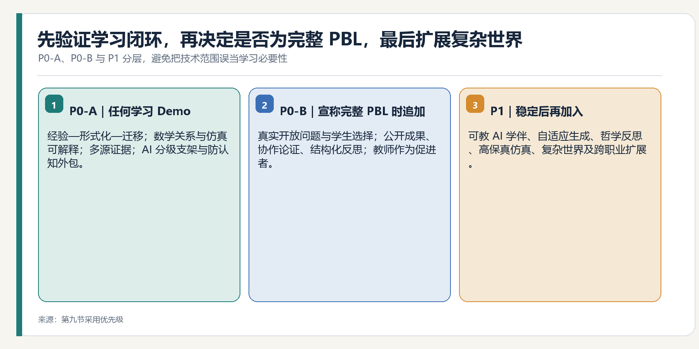
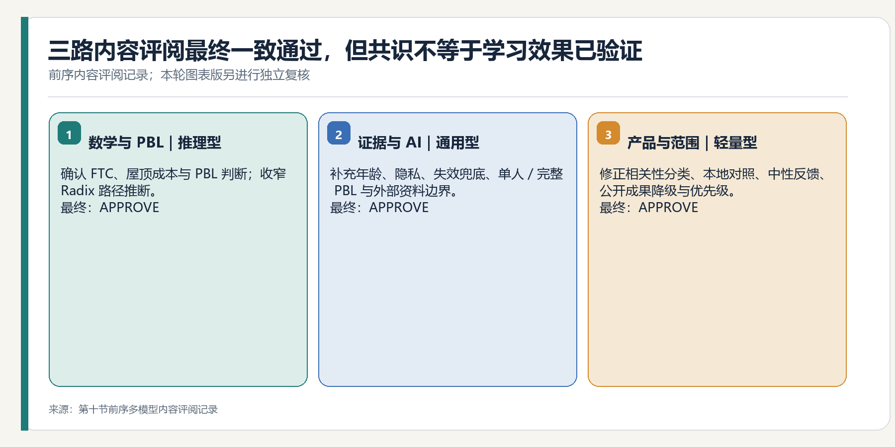

PROJECT ARCHIVE · 2026
让分数成为
让分数成为
修岛的工具
Math PBL · PD3 To C 项目档案。这里集中呈现 manager 交付的 PRD 原文，以及我在评阅与评价标准方面的工作：逐份批评、六维标准、可复用原则与图像资产。
1/21/41/8

04PRD 原文
06评阅维度
21可复用原则
30图像资产
01 / PROJECT DOCS
项目文档
manager 交付的 PD-1 / PD-2 / PD-3 与数学小镇 PRD，按原文呈现，未改动正文。
02 / MY CONTRIBUTION
个人贡献：Critique & Criteria
批评回答“材料能支持什么、不能证明什么”；标准回答“用什么维度判断、怎样检验”。
分析 · 个人贡献
PRD 匹配分析
三张情境图与现有 PRD 的证据化比对
阅读原文 → Critique · 个人贡献Critique · 四份材料评阅
六维标准、逐份评阅、外部案例与原则库
阅读原文 → Critique · 个人贡献PD-1 质询与批评
对照 pbl 源码的 grill
阅读原文 → Critique · 个人贡献PD-2 质询与批评
对照 pbl 源码的 grill
阅读原文 → Critique · 个人贡献PD-3 Grill & Critic
任务级 Agent 能力与学习证据审查
阅读原文 → Critique · 个人贡献旧三任务稿复核
事实基线与重写原则
阅读原文 → CRITERIA · 汇总页六维评价标准 · 21 条原则 · 12 条不采纳表述
把散落在评阅报告里的判断依据整理成一张可复用的评价框架。
阅读标准 →从情境到证据
图不代表学习效果。所有图表由程序依据正文生成；AIGC 插画只承担叙事，不承担数据或数学比例。
真实任务经验 → 形式化 → 迁移
任务成功 ≠ 概念理解技术验证 ≠ 学习验证
03 / VISUAL ASSETS
图像资产
24 张程序化图表 + 6 张 AIGC 情境插画，点击查看原图。


01图 1｜相关性按“数学内容／PBL 学习设计”分轴呈现，避免用一个“相关”掩盖差异。程序化图表
 02图 2｜五类风险共同说明：情境、行为、公式、技术和引用都不能单独替代学习证据。
02图 2｜五类风险共同说明：情境、行为、公式、技术和引用都不能单独替代学习证据。程序化图表
 03图 3｜六个维度使用同一标准，技术验证与学习验证分别检查。
03图 3｜六个维度使用同一标准，技术验证与学习验证分别检查。程序化图表
 04图 4｜覆盖矩阵保留“无、弱、中、强”等定性类别，不转换为精确分数。
04图 4｜覆盖矩阵保留“无、弱、中、强”等定性类别，不转换为精确分数。程序化图表
 05图 5｜直觉和形式化可以互相校正，但负增量论证与中值定理依赖链仍需补足。
05图 5｜直觉和形式化可以互相校正，但负增量论证与中值定理依赖链仍需补足。程序化图表
 06图 6｜合理内核是规则、生成与学习目标分层；隐私、教师复核和数学范围仍需补齐。
06图 6｜合理内核是规则、生成与学习目标分层；隐私、教师复核和数学范围仍需补齐。程序化图表
 07图 7｜“能运行”与“能促进学习”使用不同问题和不同证据，不共享一个 GO 结论。
07图 7｜“能运行”与“能促进学习”使用不同问题和不同证据，不共享一个 GO 结论。程序化图表


08图 8｜公式和支架可按学生状态进入，不把“经验必须最先”绝对化。程序化图表


09图 9｜统一处理方式不是折中，而是明确哪些层应受控、哪些证据应互补。程序化图表


10图 10｜案例价值在于揭示机制和边界；样本量属于不同研究，不作效果大小比较。程序化图表


11图 11｜“无失败惩罚”与“桥塌反馈”可以共存，但桥塌只能是中性状态，不是惩罚。程序化图表
 12图 12｜操作与概念的对应比媒介复杂度更重要；游戏不天然优于讲授。
12图 12｜操作与概念的对应比媒介复杂度更重要；游戏不天然优于讲授。程序化图表


13图 13｜外部案例用于收紧原则，不把特定研究直接外推为分数学习成效。程序化图表
 14图 14｜核心原则只有转化为可观察检验，才不只是口号。
14图 14｜核心原则只有转化为可观察检验，才不只是口号。程序化图表
 15图 15｜边界不是附加说明，而是原则能够安全使用的前提。
15图 15｜边界不是附加说明，而是原则能够安全使用的前提。程序化图表
 16图 16｜单人切片、合作游戏与完整课堂 PBL 分层声明，不虚构协作或互评。
16图 16｜单人切片、合作游戏与完整课堂 PBL 分层声明，不虚构协作或互评。程序化图表
 17图 17｜为便于阅读按问题性质归组；编号对应下文，不是风险评分。
17图 17｜为便于阅读按问题性质归组；编号对应下文，不是风险评分。程序化图表
 18图 18｜任务成功只是起点；解释与独立变式提供交叉验证，延迟保持需另设任务。
18图 18｜任务成功只是起点；解释与独立变式提供交叉验证，延迟保持需另设任务。程序化图表


19图 19｜两条均按同一整体等分为 40 份；16/40 与 15/40 的差为 1/40，游戏后果不得夸大。程序化图表


20图 20｜八项约束共同限制世界、数学、AI 和评价，首个切片只验证一个核心概念。程序化图表


21图 21｜先验证学习闭环，再决定是否声明完整 PBL，复杂世界与高保真仿真后置。程序化图表
 22图 22｜最终标准是一条可检验的学习链，而不是某个引擎、NPC 或哲学标签。
22图 22｜最终标准是一条可检验的学习链，而不是某个引擎、NPC 或哲学标签。程序化图表


23图 23｜前序内容评阅均通过；图表版的独立复核结果见下文。程序化图表
 24图 24｜三个不同模型家族完成图表版复核；MiniMax 用于 AIGC 生图，不计入最终三方评阅。
24图 24｜三个不同模型家族完成图表版复核；MiniMax 用于 AIGC 生图，不计入最终三方评阅。程序化图表
 25情境图 E｜AI 支持思考，教师保留查看和纠正权。画面不表示 AI 已具备可靠诊断能力。
25情境图 E｜AI 支持思考，教师保留查看和纠正权。画面不表示 AI 已具备可靠诊断能力。AIGC 情境插画
26情境图 A｜修复浮岛的学习世界。MiniMax AIGC 情境插画，仅用于叙事，不是数学比例图或学习效果证据。AIGC 情境插画 27情境图 F｜工坊、桥梁与水渠只承担叙事；实际等分和分数比较以程序图及可核查数据为准。

AIGC 情境插画 28情境图 D｜左侧为答题奖励建岛，右侧为操作与解释改变世界。AIGC 仅表达结构差异，不断言任一产品有效或无效。

AIGC 情境插画
 29情境图 C｜操作、讨论与新场景应用构成叙事化学习闭环。画面中的书写痕迹没有数学含义。
29情境图 C｜操作、讨论与新场景应用构成叙事化学习闭环。画面中的书写痕迹没有数学含义。AIGC 情境插画 30情境图 B｜四份材料进入同一评阅工作台。画面中的空白档案和模型只作章节叙事，不表示材料内容或证据等级。

AIGC 情境插画